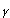
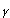

X which is Hausdorff and x
X which is Hausdorff and x  y
y  A then
A then  U, V in X separating x and y.
U, V in X separating x and y.Then A
 U and A V are open in the subspace topology on A and separate x, y.
U and A V are open in the subspace topology on A and separate x, y.- Given (x1 , y1 ) (x2 , y2 ) in X
 Y, either x1 y1 or x2 y2. Suppose the former. Then U, V in X separating x1 and x2 and then U Y and V Y separate (x1 , y1 ) and (x2 , y2 ).
Y, either x1 y1 or x2 y2. Suppose the former. Then U, V in X separating x1 and x2 and then U Y and V Y separate (x1 , y1 ) and (x2 , y2 ).
- Since it is the inverse images of open sets that are open, one would not expect this to happen. In fact, if you take the identity map from R with the usual topology to R with the trivial topology, you can see that it doesn't.
- For the same reason, you would not expect this. In fact the identity map from R with the usual topology to R with the trivial topology (which is the example of Exercises 7 Question 4 : R
 R / Q) shows that it doesn't.
R / Q) shows that it doesn't.
 ) and those made using these.
) and those made using these.So the closed sets are the usual ones together with [a, b), (-
, a) and those made by combining them, Hence the only extra ones are open as well and so the separation cannot be done.Remark
The really amazing thing about this example is that the product of this space with itself is not normal.
y, if {y} is closed we have X - {y} is an open set containing x but not y. Hence X is T1.If x is T1 and Uy is an open set containing y but not x then
 { Uy | y x } = X - {x} and so {x} is closed.
{ Uy | y x } = X - {x} and so {x} is closed.For a finite T1 space, every subset is a finite union of singletons and so is closed. Hence every subset is open also and the topology is discrete.
To see this, note that both the projection maps pX : X
Y to X and pY : X Y Y map open sets to open sets and closed sets to closed sets.So if U is a non-empty clopen set in X
Y its images in X and Y are both clopen and hence the whole of X and Y. Hence U = X Y. (ii) X/~ is the continuous image of a connected set and hence is connected.
{a, b} is not constant then the open sets f -1({a}) and f -1({b}) would disconnect X.If X is disconnected by sets U and V, map U to a and V to b and get a continuous map.
A or V A would be the whole of A. Say A U (which is a closed set). Hence cl(A) U and U, V would not be a disconnection.
If C is a component, then C = cl(C) and so C is closed.
Take X to be a (closed) "filled in" figure 8. Taking the interior removes the "crossing point" and so the interior is disconnected.
, a) [a, ) and so is disconnected. Its components are singleton sets since if x y we can take a between them and disconnect them by sets like those above.
(i) In the cofinite topology R is connected since the only proper closed subsets are finite ones.
(ii) Similarly, R is connected in the co-countable topology.
 is reflexive and symmetric. Use the fact that A B is connected if A and B are and A B
is reflexive and symmetric. Use the fact that A B is connected if A and B are and A B  to prove transitivity. [The equivalence classes are the components.]
to prove transitivity. [The equivalence classes are the components.]
Again it is clear that  is symmetric and reflexive. To prove transitivity, take a path
is symmetric and reflexive. To prove transitivity, take a path  connecting p and q and a path
connecting p and q and a path  connecting q and r and make a new path  by (t) = (2t) if 0
connecting q and r and make a new path  by (t) = (2t) if 0  t 1/2 and (2t-1) otherwise.. Then connects p and r.
t 1/2 and (2t-1) otherwise.. Then connects p and r.
Since a path (which is the continuous image of the connected interval) is connected it follows that pathwise connected  connected
connected